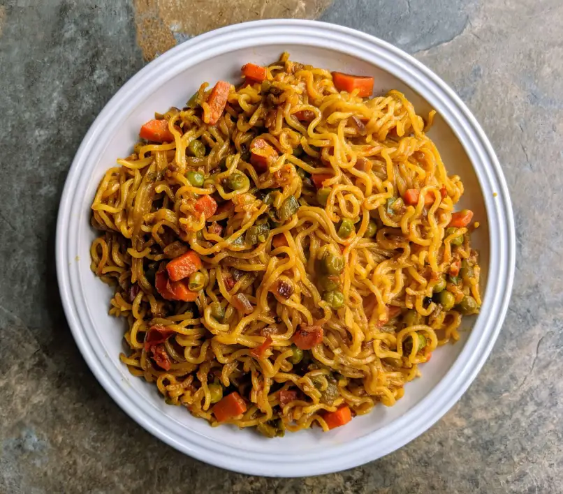

Maggi

Description
This is very simple and easy to implement maggi recipie. It can be done by anyone who has access to a packet of maggi and can play with the risk of burning their hands off.
Since its so easy to follow and works in under 5 minutes, its basically THE recipie children should start with (and the recipie most adults stuck with)
- Open your stove and put enough water in it to soak 2 packets worth of maggi in
- Turn on the gas on full setting and wait for the water to boil
- When the water boils, put the gas on medium seeting
- Put maggi masala in the water
- Add the maggi in the pan
- If you are a expert you can add different spices, condiments and masalas to taste
- Occasionally stir and wait for the water to boil off according to prefrences
- Serve hot